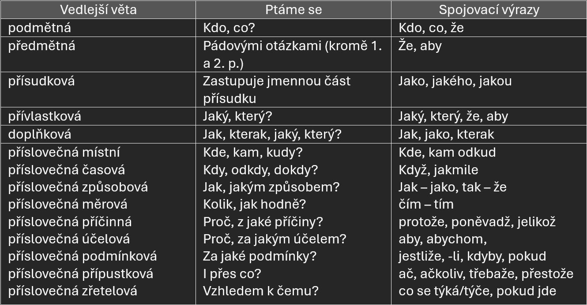

Souvětí
Podřadné
- má pouze 1 větu hlavní (VH) nebo-li větu řídící (VŘ)
- +1 nebo více vět vedlejších (VV)
Druhy vedlejších vět
Věty podmětné
(věta hlavní, věta vedlejší)
Napije se, kdo má žízeň.
Kdo promluví, zůstane po škole.
Je špatné, co provedl.
Je důležité, aby táta konečně pověsil záclonu.
Věty předmětné
(věta hlavní, věta vedlejší)
Neveř tomu, kdo ti lichotí.
Pro pláč nebyla schopna, aby mu poděkovala
Přírodovedci se snaží, aby uporoznili na vyhynutí goril.
Jsme pyšní na to, že naše mužstvo zase vyhrálo.
Věty přísudkové
A - Obloha byla jako vymalovaná. = Obloha byla, jako by ji vymaloval.
- ve větě je přísudek jmenný se sponou
- nahradíme přísudek vedlejší větou přísudkovou
- sponové sloveso zůstává ve větě hlavní
B - Josef Dobrovský byl jeden z těch, kdo šířili myšlenky národního obrození.
- na přísudkové věty někdy odkazují zájmena ten, takový
Věty příslovečné
místní
- ptáme se: Kde?, Odkud?, Kam?
- příklad: Rozeběhl se tam, kde se ozývalo volání.
časová
- ptáme se: Kdy?, Jak dlouho?
- příklad: Šel spát, jakmile byl hotov s prací.
způsobová
- ptáme se: Jak, Jakým způsobem?
- příklad: Udělal to tak, že to musel celé přepracovat.
měrová
- ptáme se: Do jaké míry?, Jakou měrou?
- příklad: To koleno mě bolelo tak, až jsem se rozbrečel.
příčinná
- ptáme se: Proč?, Z jaké příčiny?
- příklad: Udělal to, protože musel.
účelová
- ptáme se: Proč?, Za jakým účelem?
- příklad: Schovával se, aby ho nenašli.
podmínková
- ptáme se: Za jaké podmínky?
- příklad: Jestliže bude pěkné počasí, pojedeme na výlet.
přípustková
- ptáme se: I přes co?
- příklad: Jan Žižka přežil, ač svedl mnoho bitev.
Vedlejší věta přívlastková
- ptáme se: Jaký?, Jaká?, Jaké?, Jakých?, ...
- na konci hlavní věty je vždy podstatné jméno a věta vedlejší o něm říká další informaci
- příklady:
- Hledali psa, který se jim ztratil.
- Šla si na poštu pro balík, který právě dorazil.
- Začíná měsíc, ve kterém jsou Vánoce.
Vedlejší věta vložená
- bývá nejčastěji věta přívlastková
- hlavní věta je rozdělená, do ní je vložena věta vložená
- větu hlavní, která je rozdělená označujeme např. 1. VHa, 2. VV - přívlastková, 1. VHb
- příklad: Chlapec, který přežil, má jizvu na čele.
Vedlejší věta doplňková
- závisí na slovese věty řídící a záoveň se vztahuje ke jménu v podmětu nebo předmětu této věty
- bývá odvozena nejčastěji spojkou jak (jako)
- ptáme se: Jak?, V jakém stavu?
- v hlavní větě bývá často slovevo smyslového vnímání a končí zpravidla podstatným jménem nebo zájmenem
- příklad:
- Zahlédl jsem Pavla, jak nastupuje do auta. - V jakém stavu?
pozor
- Slyšeli jsme tatínka, jak startuje auto. - V jakém stavu? (doplňková)
- Slyšeli jsme, jak tatínek startuje auto. - Koho, co? (předmětná)